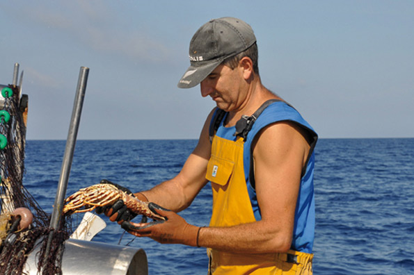

Das Meer, und stets das Meer
Eines der populärsten menorquinischen Lieder besagt, dass auf der Insel stets das Lied des Meeres und des Windes zu hören ist. Und tatsächlich ist Menorca nicht ohne die Tramontana und ohne ihre Strände denkbar. Das Meer ist mit diesem Stückchen Erde sehr großzügig gewesen, und hat 216 Kilometer Küste hervorgebracht, die Perlen unterschiedlichster Schattierungen verbirgt, und uns zwei ganz verschiedene Gesichter zeigt.
Im Süden bieten die Buchten dem Besucher feinen weißen Sand und kristallklares, türkisfarbenes Wasser. Viele dieser Strände liegen am Ende von kleinen Schluchten, die die Insel durchfurchen, und ihre Landschaft ist dadurch sanft und ruhig. Idyllische Szenarien, um Wasser, Meeresbrise und Sonne zu genießen, ohne jede Besorgnis, ohne jeden Stress. Lassen Sie sich vom Meer in den Schlaf wiegen, von der Sonne streicheln, genießen Sie einfach nur.
Im Norden zeigt sich die Küste von einer viel wilderen Seite. Von der Macht des Windes und der Wellen erodiert, verbinden die nördlichen Buchten das Türkisblau des Wassers mit dem Kupferbraun der Sandsteinfelsen. Nur keine Angst, es sind gut zugängliche, wunderschöne Strände, an denen man in Symbiose mit der unberührten, ehrlichen Natur tritt.
Für die Menorquiner ist das Leben ohne das Meer unvorstellbar. Sie wissen, wie sie dem Mittelmeer die besten Früchte mit Umsicht und Geduld entlocken können. Verpassen Sie nicht die Gelegenheit, die roten Garnelen der Insel zu probieren und kosten Sie den hervorragenden “cap roig“. Lassen Sie sich von der Languste verführen, der unbestrittenen Nummer Eins der menorquinischen Gastronomie.
Wenn Sie ein Liebhaber des Tauchsports sind, wird Sie die Unterwasserwelt Menorcas bezaubern; Sie werden sicher nicht enttäuscht sein.